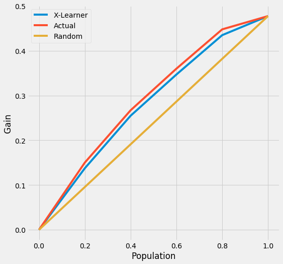
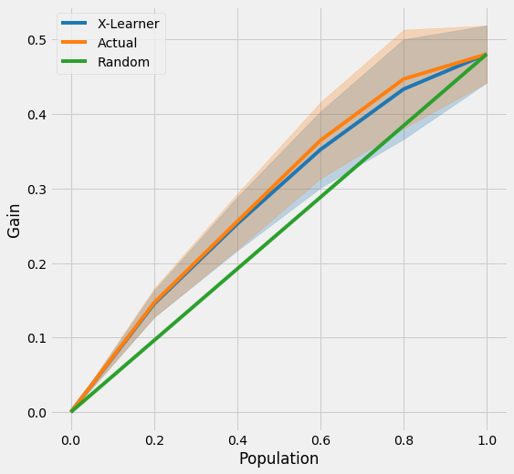
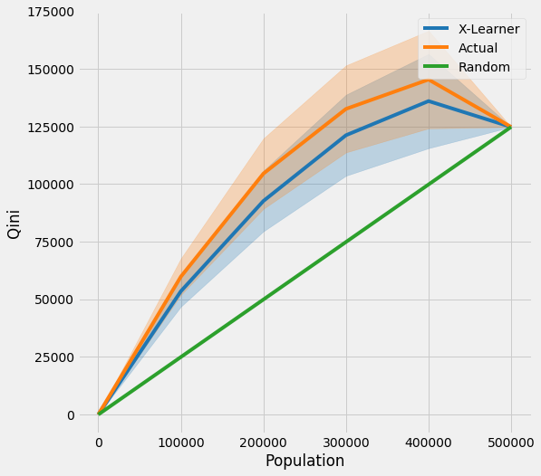

TMLE Example Notebook
Contents
TMLE Example Notebook#
This notebook demonstrates the issue of using uplift curves without knowing true treatment effect and how to solve it by using TMLE as a proxy of the true treatment effect.
%reload_ext autoreload
%autoreload 2
%matplotlib inline
import os
base_path = os.path.abspath("../")
os.chdir(base_path)
import logging
from matplotlib import pyplot as plt
import numpy as np
import pandas as pd
from sklearn.model_selection import train_test_split, KFold
import sys
import warnings
warnings.simplefilter("ignore", UserWarning)
from lightgbm import LGBMRegressor
import causalml
from causalml.dataset import synthetic_data
from causalml.inference.meta import BaseXRegressor, TMLELearner
from causalml.metrics.visualize import *
from causalml.propensity import calibrate
print(causalml.__version__)
0.7.0
logger = logging.getLogger('causalml')
logger.setLevel(logging.DEBUG)
plt.style.use('fivethirtyeight')
Generating Synthetic Data#
# Generate synthetic data using mode 1
y, X, treatment, tau, b, e = synthetic_data(mode=1, n=1000000, p=10, sigma=5.)
X_train, X_test, y_train, y_test, e_train, e_test, treatment_train, treatment_test, tau_train, tau_test, b_train, b_test = train_test_split(X, y, e, treatment, tau, b, test_size=0.5, random_state=42)
Calculating Individual Treatment Effect (ITE/CATE)#
# X Learner
learner_x = BaseXRegressor(learner=LGBMRegressor())
learner_x.fit(X=X_train, treatment=treatment_train, y=y_train)
cate_x_test = learner_x.predict(X=X_test, p=e_test, treatment=treatment_test).flatten()
alpha=0.2
bins=30
plt.figure(figsize=(12,8))
plt.hist(cate_x_test, alpha=alpha, bins=bins, label='X Learner')
plt.hist(tau_test, alpha=alpha, bins=bins, label='Actual')
plt.title('Distribution of CATE Predictions by X-Learner and Actual')
plt.xlabel('Individual Treatment Effect (ITE/CATE)')
plt.ylabel('# of Samples')
_=plt.legend()

Validating CATE without TMLE#
df = pd.DataFrame({'y': y_test, 'w': treatment_test, 'tau': tau_test, 'X-Learner': cate_x_test, 'Actual': tau_test})
Uplift Curve With Ground Truth#
If true treatment effect is known as in simulations, the uplift curve of a model uses the cumulative sum of the treatment effect sorted by model’s CATE estimate.
In the figure below, the uplift curve of X-learner shows positive lift close to the optimal lift by the ground truth.
plot(df, outcome_col='y', treatment_col='w', treatment_effect_col='tau')

Uplift Curve Without Ground Truth#
If true treatment effect is unknown as in practice, the uplift curve of a model uses the cumulative mean difference of outcome in the treatment and control group sorted by model’s CATE estimate.
In the figure below, the uplift curves of X-learner as well as the ground truth show no lift incorrectly.
plot(df.drop('tau', axis=1), outcome_col='y', treatment_col='w')

TMLE#
Uplift Curve with TMLE as Ground Truth#
n_fold = 5
kf = KFold(n_splits=n_fold)
df = pd.DataFrame({'y': y_test, 'w': treatment_test, 'p': e_test, 'X-Learner': cate_x_test, 'Actual': tau_test})
inference_cols = []
for i in range(X_test.shape[1]):
col = 'col_' + str(i)
df[col] = X_test[:,i]
inference_cols.append(col)
df.head()
| y | w | p | X-Learner | Actual | col_0 | col_1 | col_2 | col_3 | col_4 | col_5 | col_6 | col_7 | col_8 | col_9 | |
|---|---|---|---|---|---|---|---|---|---|---|---|---|---|---|---|
| 0 | 6.808806 | 1 | 0.750090 | 0.909261 | 0.856218 | 0.911884 | 0.800551 | 0.637318 | 0.584033 | 0.041204 | 0.541312 | 0.183795 | 0.604942 | 0.802967 | 0.321925 |
| 1 | 5.074509 | 1 | 0.828351 | 0.696708 | 0.613880 | 0.871032 | 0.356727 | 0.168573 | 0.291071 | 0.953692 | 0.838566 | 0.497353 | 0.777390 | 0.811558 | 0.076717 |
| 2 | -8.293643 | 0 | 0.230920 | 0.456776 | 0.335491 | 0.531401 | 0.139581 | 0.604482 | 0.051055 | 0.651872 | 0.878593 | 0.592694 | 0.695946 | 0.972597 | 0.178291 |
| 3 | 4.511347 | 0 | 0.306119 | 0.189546 | 0.388202 | 0.615514 | 0.160891 | 0.825520 | 0.544876 | 0.107617 | 0.746920 | 0.002706 | 0.963717 | 0.603323 | 0.506294 |
| 4 | 5.418169 | 0 | 0.293402 | 0.299151 | 0.476290 | 0.839696 | 0.112883 | 0.964546 | 0.336093 | 0.548355 | 0.649487 | 0.905765 | 0.249261 | 0.070978 | 0.947820 |
tmle_df = get_tmlegain(df, inference_col=inference_cols, outcome_col='y', treatment_col='w', p_col='p',
n_segment=5, cv=kf, calibrate_propensity=True, ci=False)
tmle_df
| X-Learner | Actual | Random | |
|---|---|---|---|
| 0.0 | 0.000000 | 0.000000 | 0.000000 |
| 0.2 | 0.137463 | 0.150106 | 0.095493 |
| 0.4 | 0.254839 | 0.267014 | 0.190986 |
| 0.6 | 0.346940 | 0.359990 | 0.286479 |
| 0.8 | 0.434913 | 0.447867 | 0.381972 |
| 1.0 | 0.477465 | 0.477465 | 0.477465 |
Uplift Curve wihtout CI#
plot_tmlegain(df, inference_col=inference_cols, outcome_col='y', treatment_col='w', p_col='p',
n_segment=5, cv=kf, calibrate_propensity=True, ci=False)

plot(df, kind='gain', tmle=True, inference_col=inference_cols, outcome_col='y', treatment_col='w', p_col='p',
n_segment=5, cv=kf, calibrate_propensity=True, ci=False)

AUUC Score#
auuc_score(df, tmle=True, inference_col=inference_cols, outcome_col='y', treatment_col='w', p_col='p',
n_segment=5, cv=kf, calibrate_propensity=True, ci=False)
X-Learner 0.275270
Actual 0.283740
Random 0.238733
dtype: float64
Uplift Curve with CI#
tmle_df = get_tmlegain(df, inference_col=inference_cols, outcome_col='y', treatment_col='w', p_col='p',
n_segment=5, cv=kf, calibrate_propensity=True, ci=True)
tmle_df
| X-Learner | Actual | X-Learner LB | Actual LB | X-Learner UB | Actual UB | Random | |
|---|---|---|---|---|---|---|---|
| 0.0 | 0.000000 | 0.000000 | 0.000000 | 0.000000 | 0.000000 | 0.000000 | 0.000000 |
| 0.2 | 0.145151 | 0.146628 | 0.127016 | 0.127210 | 0.163285 | 0.166046 | 0.096077 |
| 0.4 | 0.252563 | 0.255667 | 0.216629 | 0.218323 | 0.288496 | 0.293011 | 0.192154 |
| 0.6 | 0.352174 | 0.364541 | 0.300866 | 0.313233 | 0.403483 | 0.415850 | 0.288231 |
| 0.8 | 0.433351 | 0.446890 | 0.366285 | 0.380624 | 0.500417 | 0.513157 | 0.384308 |
| 1.0 | 0.480384 | 0.480384 | 0.441999 | 0.441999 | 0.518770 | 0.518770 | 0.480384 |
plot_tmlegain(df, inference_col=inference_cols, outcome_col='y', treatment_col='w', p_col='p',
n_segment=5, cv=kf, calibrate_propensity=True, ci=True)

plot(df, kind='gain', tmle=True, inference_col=inference_cols, outcome_col='y', treatment_col='w', p_col='p',
n_segment=5, cv=kf, calibrate_propensity=True, ci=True)

Qini Curve with TMLE as Ground Truth#
Qini Curve without CI#
qini = get_tmleqini(df, inference_col=inference_cols, outcome_col='y', treatment_col='w', p_col='p',
n_segment=5, cv=kf, calibrate_propensity=True, ci=False)
qini
| X-Learner | Actual | Random | |
|---|---|---|---|
| 0.0 | 0.000000 | 0.000000 | 0.000000 |
| 100000.0 | 53513.373815 | 59840.329296 | 24964.329463 |
| 200000.0 | 92693.576894 | 104578.508000 | 49928.658925 |
| 300000.0 | 121232.782373 | 132653.427128 | 74892.988388 |
| 400000.0 | 136045.083604 | 145388.277994 | 99857.317851 |
| 500000.0 | 124821.647313 | 124821.647313 | 124821.647313 |
plot_tmleqini(df, inference_col=inference_cols, outcome_col='y', treatment_col='w', p_col='p',
n_segment=5, cv=kf, calibrate_propensity=True, ci=False)

plot(df, kind='qini', tmle=True, inference_col=inference_cols, outcome_col='y', treatment_col='w', p_col='p',
n_segment=5, cv=kf, calibrate_propensity=True, ci=False)

Qini Score#
qini_score(df, tmle=True, inference_col=inference_cols, outcome_col='y', treatment_col='w', p_col='p',
n_segment=5, cv=kf, calibrate_propensity=True, ci=False)
X-Learner 23814.998608
Actual 33683.500462
Random 0.000000
dtype: float64
Qini Curve with CI#
qini = get_tmleqini(df, inference_col=inference_cols, outcome_col='y', treatment_col='w', p_col='p',
n_segment=5, cv=kf, calibrate_propensity=True, ci=True)
qini
| X-Learner | Actual | X-Learner LB | Actual LB | X-Learner UB | Actual UB | Random | |
|---|---|---|---|---|---|---|---|
| 0.0 | 0.000000 | 0.000000 | 0.000000 | 0.000000 | 0.000000 | 0.000000 | 0.000000 |
| 100000.0 | 53513.373815 | 59840.329296 | 46827.611036 | 51915.622165 | 60199.136594 | 67765.036427 | 24964.329463 |
| 200000.0 | 92693.576894 | 104578.508000 | 79515.426034 | 89298.783725 | 105871.727753 | 119858.232275 | 49928.658925 |
| 300000.0 | 121232.782373 | 132653.427128 | 103649.630931 | 113772.913012 | 138815.933816 | 151533.941243 | 74892.988388 |
| 400000.0 | 136045.083604 | 145388.277994 | 115586.643138 | 124194.530581 | 156503.524070 | 166582.025407 | 99857.317851 |
| 500000.0 | 124821.647313 | 124821.647313 | 124821.647313 | 124821.647313 | 124821.647313 | 124821.647313 | 124821.647313 |
plot_tmleqini(df, inference_col=inference_cols, outcome_col='y', treatment_col='w', p_col='p',
n_segment=5, cv=kf, calibrate_propensity=True, ci=True)

plot(df, kind='qini', tmle=True, inference_col=inference_cols, outcome_col='y', treatment_col='w', p_col='p',
n_segment=5, cv=kf, calibrate_propensity=True, ci=True)